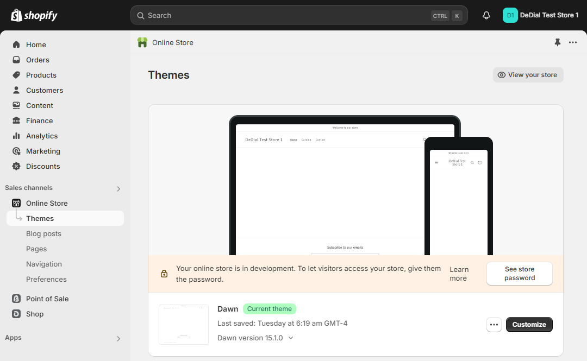
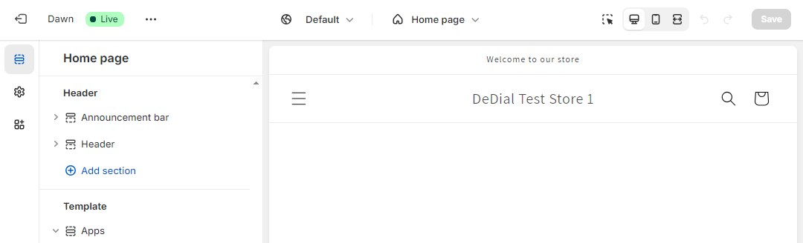
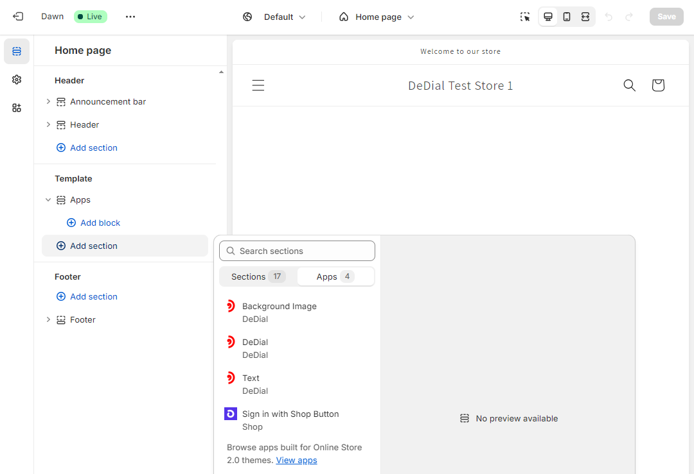

DeDial is a set of section blocks that can be used to customise and style compatible
store themes. They are intended for use by designers, developers, or store managers
and are based around the core DeDial component that renders a circular dial.
To start adding DeDial components, just go directly to the theme editor and add
the required blocks to the appropriate pages.
Go to your theme editor and click "Customize"

Select the page you wish to add DeDial blocks to

Add a section with the appropriate DeDial blocks
